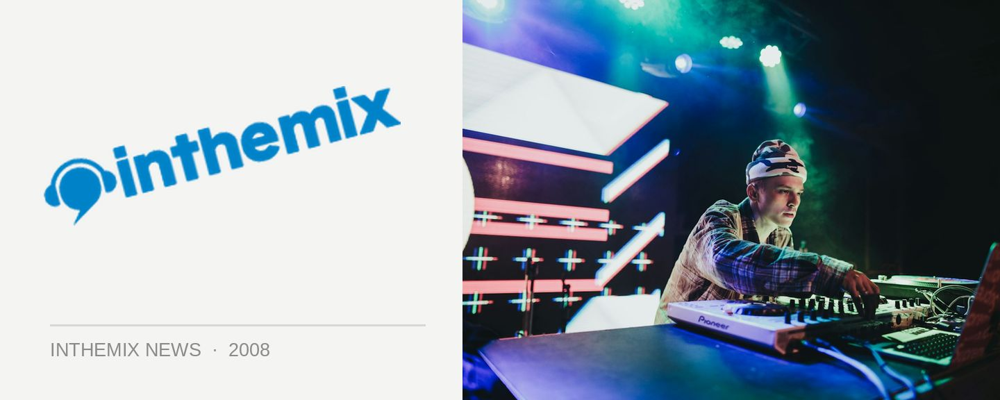

Mark Dynamix returns to Lookin' Good this weekend
To help the Lookin’ Good crew celebrate their 50th event, Mark Dynamix has returned from his ‘German excursion’ to help hammer out some of those classic house tracks we’ve loved from the past ten years; with a dash of the new of course. Noted visuals expert MoRpH will also be bringing his skills to the party for a one-off visual extravaganza to help keep the mood pumping.
Lookin’ Good Returns to Candys Apartment this Saturday, check below for set times…
Main Room
10.00 – 12.00: Ange
12.00 – 01.30: Tom da Silva
01.30 – 03.00: Adam Coverdale
03.00 – 04.30: Mark Dynamix
04.30 – 06.00: Mike McGrath
Bulletproof Room
11.00 – 01.00: Jay Smalls
01.00 – 03.00: Sam Serene
03.00 – 05.00: Ben Kelly